MrBeast (Jimmy Donaldson)
Independent creator-economy notes on platform position, audience fit, monetization, and strategic risk.
Editorial Take
Jimmy Donaldson has built something no one has before: a genuinely global entertainment machine funded almost entirely by YouTube revenue and reinvested at an almost irrational rate. The philanthropy is real, the production is extraordinary, and the multi-language localisation is a genuine competitive moat. That said, the content has become increasingly formulaic — the 'I spent X doing Y' template is showing cracks, and the Beast Burger rollout was a logistical disaster that raised questions about brand extension strategy.
Audience and Strategy
Gen Z & Alpha, 8–28, genuinely global across over 20 language channels
Extreme reinvestment: nearly all YouTube revenue goes back into production. Multi-language audio tracks (not subtitles) unlock algorithmic reach in non-English markets. Feastables is a serious attempt at a physical CPG brand, not just merch.
Milestone and Monetization
First solo creator to pass 400M subscribers. Changed what YouTube production budgets look like industry-wide.
- YouTube AdSense (9-figure annual est.)
- Feastables Chocolate Retail
- Direct Brand Integrations
- Merchandise
- MrBeast Burger (troubled rollout)
Profile Links
youtube twitter instagram tiktok website
Follower counts and creator businesses change quickly. This page is an editorial snapshot, not a live database. Before quoting a number, check the creator's current official profile or company page.